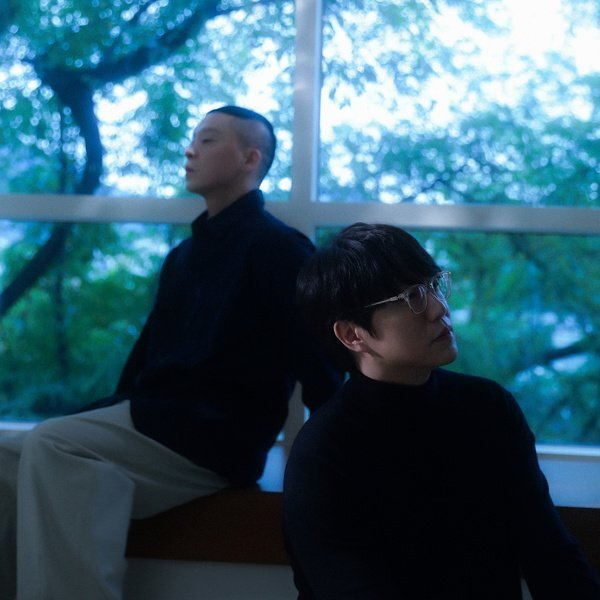
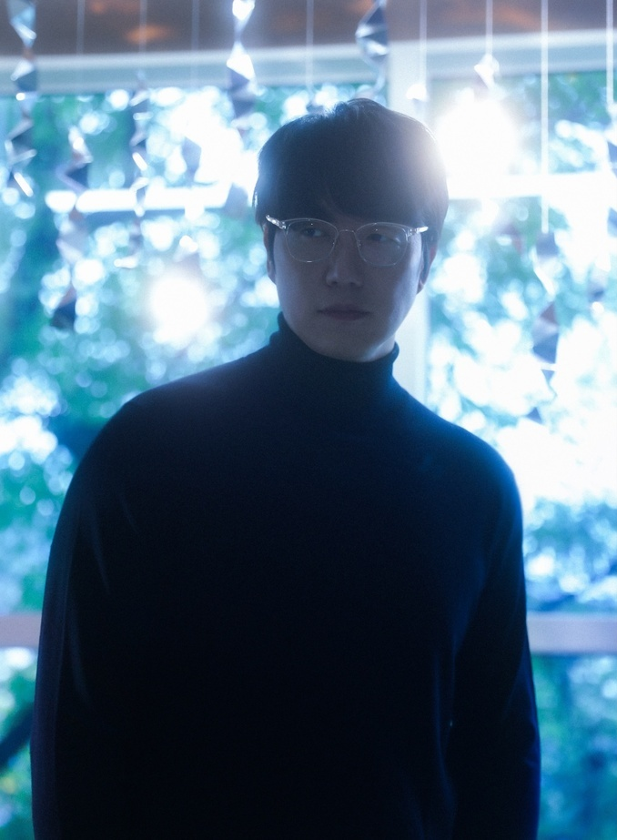
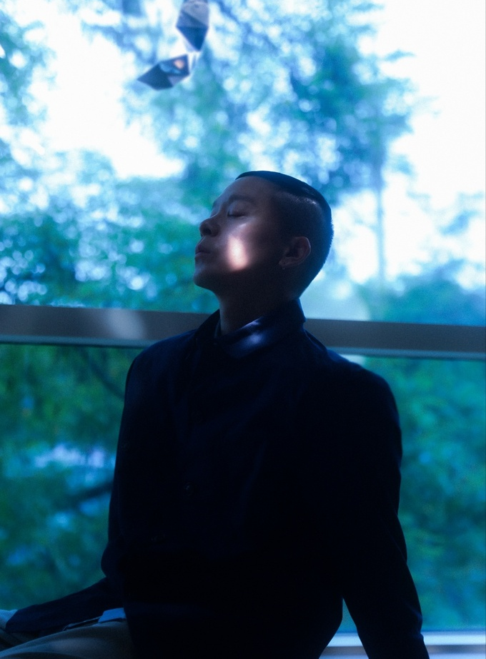

안녕하세요 라보엠입니다.
한국의 남자 가수중 좋은 목소리를 가진 가수를 꼽아보자면, 성시경 나얼이 아닐까 싶습니다. 이 두 사람이 함께 노래를 부르면 어떻게 될까요? 2023년 가요계에 한 획을 그을 노래 성시경 X 나얼의 듀엣곡 잠시라도 우리가 2023년 10월 20일 발매되었습니다.
[MV] 성시경 X 나얼 잠시라도 우리
일단 뮤비에 등장하는 주인공 천우희와 안효섭의 조합이 예사롭지 않습니다. 뮤비에서 두 주인공은 모종의 사고로 헤어지게된 것으로 보이며, 다시 마주하게 되었지만 서로 만날 수는 없는 상황에서 슬픈 미소를 줄 수 밖에 없는 심정을 슬프도록 아름답게 보여줍니다. 드라마 멜로가 체질과 너의 시간속으로를 본 사람들에게 드라마를 봤을 때의 그 감정들을 불러 일으킵니다. 좋은 배우들의 좋은 이미지에 좋은 목소리의 하모니가 얹혀지니 뮤직비디오를 보는 사람은 환상속에 서있는 기분이 됩니다. 성시경과 나얼은 상대방의 파트에서 받쳐주는 옅은 코러스를 들려주다 클라이막스에서는 서로의 코러스 라인이 그대로 드러나며 환상적인 하모니를 이룹니다.
성시경 X 나얼 잠시라도 우리 작사 작곡
이번 노래는 나얼이 작곡, 박주연 작사가가 작사했습니다. 박주연 작사가는 성시경 x 나얼 두 남자의 환상적인 화음이 돋보이는 이번 노래외에도 성시경의 노래 외워두세요, 윤종신 오래전 그날, 윤상 이별의 그늘, 가려진 시간 사이로 등 다수의 히트곡에서 서정적이고 감성적인 가사를 썼으며, 자신만의 스타일을 만들어온 나얼의 작곡으로 가을에 딱 듣기 좋은 환상적인 발라드를 완성해냈습니다. 올 가을 마음을 적셔줄 아름다운 노래 성시경 프로듀스, 나얼 작곡, 박주연 작사의 잠시라도 우리 꼭 들어보세요.
  
잠시라도 우리 가사
<성시경>
가까스레 잠이 들다 애쓰던 잠은 떠났고
아직 타는 별 과거의 빛은 흐르고
몇 번의 사막을 거쳐 몇 번의 우기를 거쳐
고요를 거쳐 이제야 추억이 된 기억들
<나얼>
떠나간 모든 것은 시간따라 갔을 뿐
우릴 울리려 떠나간건 아냐 너도 같을거야
<성시경, 나얼>
십년쯤 흘러가면 우린 어떻게 될까
만나지긴 할까 어떻게 서로를 기억해줄까
<나얼>
그걸로 충분해 서로 다른 그곳에서
잠시라도 우리 따뜻한 시간을 갖는다면
<성시경>
떠나간 모든 것은 시간따라 갔을 뿐
우릴 울리려 떠나간건 아냐 너도 같을거야
<성시경, 나얼>
십년쯤 흘렀다고 그렇게 생각해봐
그때에 터트릴 웃음을 지금 질 수 있잖아
<나얼>
그걸로 충분해 서로 다른 그곳에서
잠시라도 우리 따뜻한 시간을 갖는다면
<성시경, 나얼>
십년쯤 흘러가면 우린 어떻게 될까
만나지긴 할까 어떻게 서로를 기억해줄까
<나얼, 성시경>
그걸로 충분해 서로 다른 곳에서
잠시라도 우리 따뜻한 시간을 갖는다면